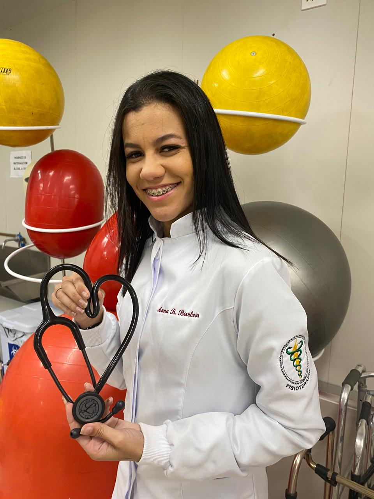
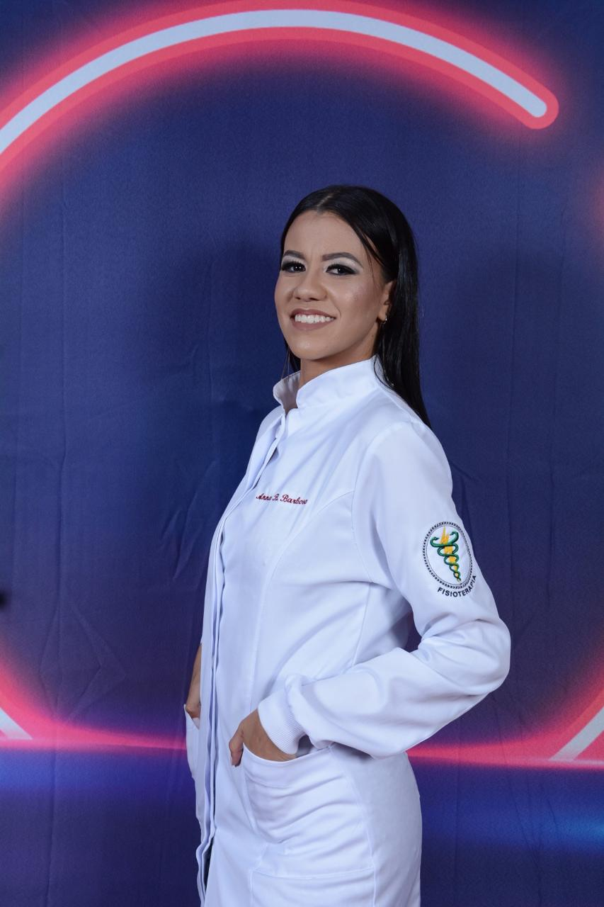
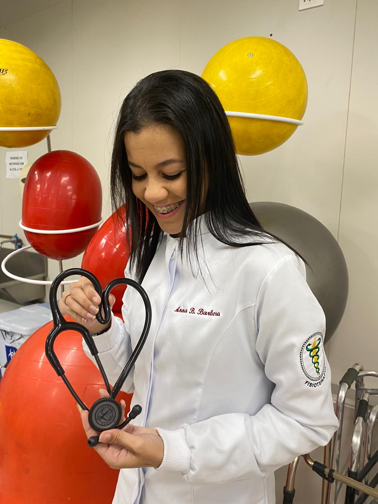

Cuidado de perto, pra você se mover sem dor de novo.
Sou Anna Barbosa, fisioterapeuta especializada em Ortopedia/Traumatologia Esportiva e em Neurofuncional. Conte um pouco sobre o que você está sentindo — depois da nossa conversa, você agenda sua sessão online, no horário que funcionar melhor pra você.

Formação sólida, cuidado de perto
Anna Beatriz Barbosa Rosa é fisioterapeuta com pós-graduação nas duas áreas que mais pedem atenção individualizada: reabilitação ortopédica/esportiva e reabilitação neurofuncional. Cada plano de tratamento é pensado pro seu caso — não existe protocolo genérico.
- CREFITO-3/391020-F
- Pós-graduação em Traumato-Ortopedia e Traumatologia Esportiva
- Pós-graduação em Fisioterapia Neurofuncional
Onde eu posso te ajudar
Ortopedia & Traumato-Esportiva
Reabilitação pós-cirúrgica, lesões musculares e articulares, dores crônicas e retorno seguro à atividade física ou ao esporte.
Neurofuncional
Reabilitação de pacientes com alterações neurológicas — AVC, lesões medulares e outras condições que afetam o movimento.
Avaliação individual
Toda sessão começa por entender sua história — o que você sente, desde quando e o que já tentou antes.
Do primeiro contato ao agendamento
Conte seu caso
Preencha o formulário de contato com um resumo do que você está sentindo.
Receba seu código
Depois da nossa conversa, você recebe um código de acesso liberado especialmente pra você.
Agende online
Use o código pra criar sua conta e escolher o melhor horário disponível na agenda.

“Cada paciente chega com uma história diferente — meu trabalho é entender essa história antes de montar qualquer plano de tratamento.”Anna Barbosa, fisioterapeuta

Vamos conversar sobre o seu caso?
Isso não agenda nada ainda — é só pra gente conversar antes.
Já recebeu um código? Crie sua conta aqui.